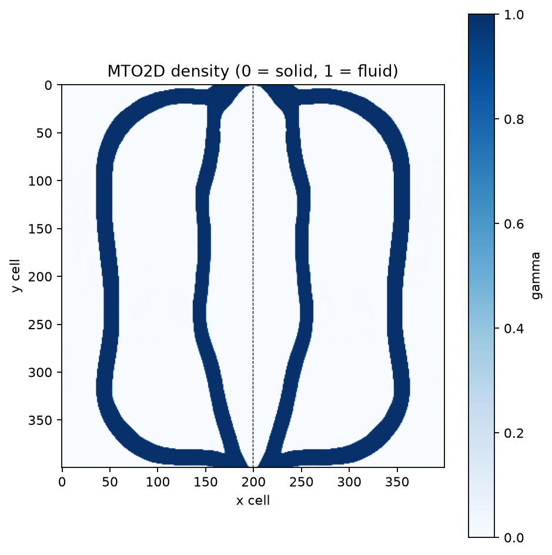
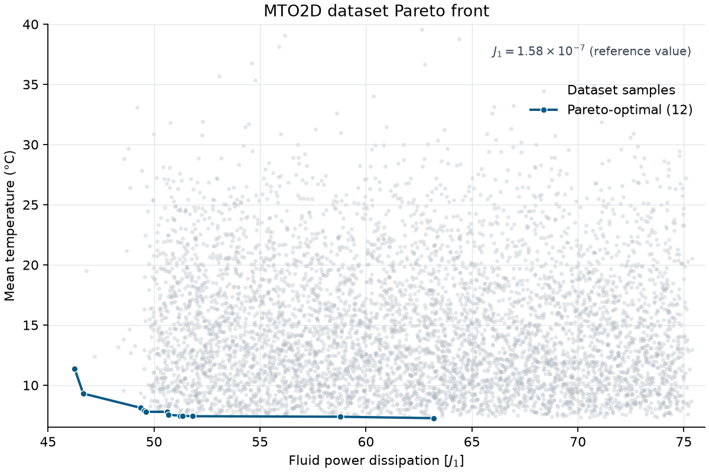

MTO2D#
{kind=link}

OpenFOAM-based 2D thermofluid topology optimization.
A design is the non-redundant, visually oriented (400, 200)
fluid-density half-domain. gamma=0 is solid and gamma=1 is fluid.
The right half is implied by symmetry and is created only for rendering.
The built-in optimizer minimizes mean temperature with MMA while treating fluid volume and power dissipation as constraints. Power dissipation is nevertheless exposed as a second EngiBench objective for Pareto analysis.
Version |
0 |
Design space |
|
Objectives |
mean_temperature: ↓ power_dissipation: ↓ |
Conditions |
|
Dataset |
|
Container |
|
Import |
|
Lead |
Arthur Drake @arthurdrake1 |
Motivation#
Multiphysics topology optimization (MTO) couples fluid flow, heat transfer, and design sensitivities in a single optimization loop, making it one of the most expensive problem families in density-based topology optimization. MTO2D distributes fluid and solid material inside a two-dimensional heat sink so that coolant entering at the top carries heat out at the bottom. Each cold-start optimization solves the incompressible Navier–Stokes and energy-balance equations with adjoint sensitivities for 200 iterations, which is why this problem is a strong benchmark for surrogate and generative approaches that try to warm-start or replace the solver.
The problem, solver, and dataset follow the VQGAN-for-MTO study by Drake et al., which generated thousands of optimized heat sinks over a range of inlet velocities, power-dissipation limits, and fluid volume fractions.
Problem setup#
MTO2D models one symmetric half of a water-cooled rectangular heat sink.
Coolant enters through a channel at the top, flows through channels placed by
the optimizer, and leaves through a channel at the bottom. The paper uses a
10 mm design-domain length, a 2 mm inlet scale, and a uniform heat source of
1e8 W/m².
The inlet has fixed velocity and reference temperature (T = 0). The outlet
has zero pressure and no normal temperature gradient. The remaining outer
walls are no-slip and adiabatic, and the centerline is a symmetry boundary.
For every proposed material layout, the solver computes steady incompressible
flow and heat transfer.
Design space#
A design is a float32 array with shape (400, 200) and values in [0, 1],
storing the non-redundant left half of the symmetric design domain:
gamma = 0means solid material.gamma = 1means fluid.render()mirrors the half-domain horizontally into a symmetric(400, 400)image.
The example above is a mirrored 400 x 400 rendering of public dataset row
train[1977] (volfrac = 0.26), selected for its sparse, smooth fluid
channels.
The underlying OpenFOAM field has 86,400 cells: the first 80,000 encode the
(400, 200) design in two solver-specific mesh blocks, and the remaining
6,400 are fixed fluid cells (inlet and outlet channels) copied unchanged from
the case template. The design_io module owns this mapping so that simulation
never silently resizes a design.
Datasets store optimal_design as a flat list<float32> of length 80,000 in
C order, following the Beams3D Hub convention; random_design() reshapes rows
back to the native (400, 200) representation.
The earlier
IDEALLab/MTO-2D NumPy
dataset stores each design as a (256, 256) image of the whole left
half-domain, produced by a lossy anisotropic bicubic resize of the native
field. MTO2D v0 deliberately accepts only the native representation so
simulation never silently resizes a topology.
Objectives#
EngiBench minimizes both reported objectives, in this order:
mean_temperature: mean temperature over the domain, reported in degrees Celsius.power_dissipation: measured fluid power dissipation, reported as the factorJ/J1.
The native MMA formulation uses mean temperature as its scalar objective and
enforces fluid volume and J < J̄ as constraints. EngiBench also exposes the
measured J as a second objective so designs can be compared on a Pareto
front. The condition max_power_dissipation is the input bound J̄/J1, not
the measured objective. Because that constraint depends on simulation output,
simulate_verbose() reports its relative residual as
power_dissipation / max_power_dissipation - 1.
Conditions#
inlet_velocity: Signed inlet y-velocity in m/s; the nominal dataset range is [-0.095, -0.025].max_power_dissipation: Dimensionless normalized power-dissipation bound. The retained solver divides physical dissipation by its exact ``D_normalization = 1.57572e-7``. The paper denotes the rounded reference scale ``J1 ≈ 1.58e-7``. The nominal dataset range is [47.7, 75]. The second sweep targeted [50, 75], but 17 of the 5,666 retained rows fall below 50.volfrac: Maximum all-cell fluid volume fraction.
inlet_velocity: signed inlet velocity, nominally from-0.095to-0.025m/s, corresponding to Reynolds numbers from 50 to 190; the negative sign denotes flow direction.max_power_dissipation: input boundJ̄/J1, primarily sampled from50to75in the stable sweep; the full published range is[47.7, 75]. The paper definesJ1 = 1.58e-7as the reference dissipation of a straight, uniform-width channel from inlet to outlet. The solver uses the more precise normalization1.57572e-7.volfrac: maximum all-cell fluid fraction, nominally from0.25to0.70.
Simulator#
The solver is an adjoint-based OpenFOAM 5 application: steady incompressible Navier–Stokes and energy-conservation equations with a Brinkman penalization for solid regions, RAMP material interpolation, a distance-based density filter with Heaviside projection, and the method of moving asymptotes (MMA) for design updates. It runs in an external containerized runtime and supports MPI decomposition.
simulate() performs one frozen final-physics evaluation: the design is
written into a pristine copy of the case, design updates are disabled, and the
final continuation parameters (qu = 0.01, alphaMax = 5.0252e6,
Heaviside = 59.8, movement limit 0) are applied so the reported objectives
belong to the input design exactly.
optimize() runs the full adjoint/MMA loop. The default
optimization_schedule="legacy" reproduces the source optimizer’s exact
continuation timing used to generate the published dataset; an alternative
"strict" schedule exposes configurable interpolation profiles and endpoints.
Cold starts run 200 iterations by default; warm starts from a good initial
design commonly use 20. mode="cold" selects a continuation schedule but does
not construct the starting design. For exact historical initialization, use a
constant (400, 200) field whose value is volfrac; the separate 6,400 fixed
cells remain fluid, so the initial all-cell volume is temporarily above the
bound. The retained legacy optimization history for the case
with inlet_velocity = -0.074, max_power_dissipation = 63.1, and
volfrac = 0.61 reaches mean_temperature = 9.45825 and
power_dissipation = 62.2588. Those historical values describe the
pre-update optimizer field, not the committed frozen-simulation reference.
optimize() returns (design, history) exactly as the base Problem
contract specifies. Each history entry includes the active power bound,
constraint residuals, and elapsed solver time. Retained artifacts remain
available through problem.last_solver_run.
See the package README.md in engibench/problems/mto2d/ for runner
settings, runtime-image preparation, and usage.
Dataset#
The dataset is hosted at
IDEALLab/mto_2d_v0.
Rows contain the flat optimal_design, the three condition fields, and both
objective fields.
For every historical run, the solver wrote mean temperature and power
dissipation before the MMA update, then saved the updated gamma field. The
published objectives and optimal_design therefore describe adjacent solver
states and are not expected to match a frozen re-simulation exactly.
Retained rows satisfy the fluid-volume constraint tightly (median all-cell
residual approximately -7.15e-5), but satisfy the power-dissipation constraint only to
within MMA’s convergence tolerance: 3,149 of the 5,666 rows report
power_dissipation above their own max_power_dissipation, by at most 0.98%.
Positive violations are therefore small; negative residuals simply indicate
slack and reach about -23.3%.
The paper sampled 10,000 condition combinations with Latin hypercube
sampling. An initial 5,000-case sweep used J̄/J1 from 5 to 75; after many
low-bound cases violated the power constraint, a second roughly 5,000-case
sweep concentrated on 50 to 75. Both sweeps used volfrac from 0.25 to 0.70
and Reynolds number from 50 to 190. Retaining only converged,
constraint-satisfying runs within the source study’s convergence tolerance
produced 5,666 designs. Their
4,249/283/1,134 train/validation/test splits follow the paper’s 75/5/20 policy.
{kind=link}

The global dataset front contains 12 Pareto-optimal designs across all three
splits and operating conditions. Both axes are minimized. Fluid power
dissipation is shown in multiples of J1, where J1 = 1.58e-7 is the paper’s
reference value. One 71.3 °C outlier lies above the displayed temperature
range.#
Citation#
If you use this problem or dataset, please cite the source study:
@article{drake2026quantize,
title={To Quantize or Not to Quantize: Effects on Generative Models for Topology Optimization Problems},
author={Drake, Arthur and Chen, Qiuyi and Wang, Jun and Nejat, Ardalan and Guest, James K. and Fuge, Mark},
journal={Journal of Mechanical Design},
year={2026},
volume={148},
number={10},
pages={101704},
doi={10.1115/1.4071440}
}
@article{yu2020three,
title={Three-dimensional topology optimization of thermal-fluid-structural problems for cooling system design},
author={Yu, M. and Ruan, S. and Gu, J. and Ren, M. and Li, Z. and Wang, X. and Shen, C.},
journal={Structural and Multidisciplinary Optimization},
volume={62},
number={6},
pages={3347--3366},
year={2020},
publisher={Springer}
}
@article{svanberg1987method,
title={The method of moving asymptotes -- a new method for structural optimization},
author={Svanberg, Krister},
journal={International Journal for Numerical Methods in Engineering},
volume={24},
number={2},
pages={359--373},
year={1987},
publisher={Wiley},
doi={10.1002/nme.1620240207}
}